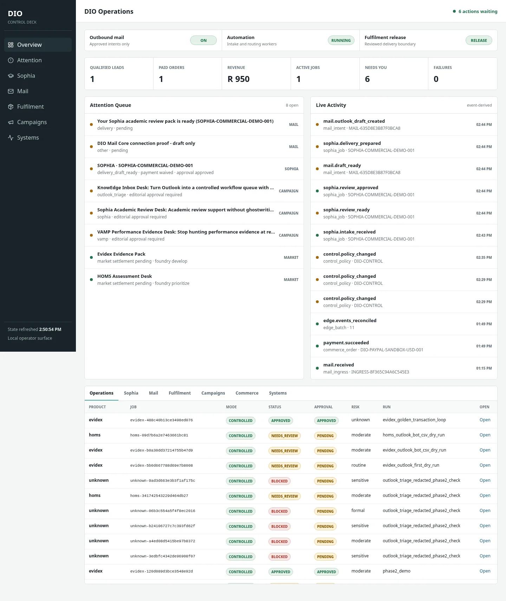

Observe the world, the request, the evidence and the commercial condition before acting.
DETERMINISTIC INTELLIGENCE ORCHESTRATOR
WE GOT TIRED OF ASKING AI TO GUESS.SO WE BUILT A WORLD IT COULD KNOW.
DIO is an evidence-governed operating intelligence for professional work. It observes state, binds evidence, applies domain rules, routes bounded action, preserves human authority and records what actually happened.
HUMAN AUTHORITYEVENT-TRACEABLEEVIDENCE-BOUNDFAIL-CLOSED

SEE STATEworld → evidence
PRESERVE AUTHORITYmachine prepares · human decides
LEAVE RECEIPTSevent → lineage → outcome
01
THE DIO DOCTRINE
Intelligence should not keep rediscovering what has already been settled.
The original DIO idea was simple and dangerous: use inference where ambiguity exists, verify the result, crystallise the settled state, then stop paying the uncertainty tax. The larger DIO extends that logic across professional work itself.
SEE CLEARLY. BIND EVIDENCE. PRESERVE AUTHORITY. ACT ONLY ON WHAT HAS BEEN EARNED.
Outputs remain connected to sources, rules, receipts and the state that justified them.
Once ambiguity is resolved and validated, reuse the settled representation instead of re-guessing it.
Machines prepare. Humans retain consequential professional, academic, HR and release authority.
Events, payment, delivery and campaign outcomes close the loop with observable evidence.
FOUR DOORS / ONE OPERATING SYSTEM
The customer buys relief.
DIO runs backstage.
Each product solves a different professional problem. Underneath, the same operating spine handles intake, evidence, rules, review, commerce, delivery and outcome learning.
01
HOMS / ASSESSMENT INTELLIGENCE
Curriculum in.
Curriculum in.
Moderated assessment out.
CAPS-aware assessment architecture, beautiful papers, memoranda, rubrics and structured marking support with educator authority preserved at the final boundary.
- Subject and phase-aware design
- Exam / task + memorandum + rubric
- Review and moderation gates

02
EVIDEX / EVIDENCE INTELLIGENCE
Evidence in.
Evidence in.
Review-ready pack out.
Turn scattered programme, grant, audit and compliance evidence into an indexed, source-mapped review trail with visible provenance and a human release gate.
- Claims ↔ evidence ↔ source mapping
- Provenance and evidence receipts
- Controlled delivery and payment state

03
SOPHIA / SCHOLARLY & LEARNING INTELLIGENCE
Strengthen the work.
Strengthen the work.
Never steal the authorship.
Sophia supports technical source finding, source-fit checking, citation and formatting diagnostics, literature-review critique and a new guided-learning lane for original supplementary resources.
- Source, citation and literature-review diagnostics
- Authorship-preserving research support
- Guided learning + HOMS companion resources

04
VAMP / PERFORMANCE EVIDENCE INTELLIGENCE
Stop reconstructing a year
Stop reconstructing a year
the week before review.
VAMP prepares evidence snapshots from task agreements and proof artifacts. It maps accepted evidence to objectives, exposes gaps and leaves the performance judgment with the authorised human reviewer.
- Institution-profile-driven objectives
- Read-only evidence preparation
- No automated employee rating or employment action
OBJECTIVES61
EVIDENCE116
GAPSVISIBLE
THE BIGGER BEAST
BEAST was the fortress.
DIO is the city that grew around it.
The substrate protects execution. DIO turns the surrounding world into governed state, routes the right engine, asks humans only where their authority matters, then watches what happened next.
settled / allowed review / authority blocked / refused
WORLDmarket · mail · files · requests
DIO SENSORIUMobserve · classify · bind
EVENT / AUTHORITY SPINEstate · rules · provenance
HOMSassessment
EVIDEXevidence
SOPHIAresearch / learning
VAMPperformance
HUMAN AUTHORITYapprove · refuse · revise
OUTCOMEdelivery · payment · response · learning
DIO EVENT SPINESIMULATED PUBLIC DEMO · NOT LIVE CUSTOMER TELEMETRY
WHY EVENTS MATTER
The dashboard does not invent the story.
Operational state is derived from receipts such as mail.received, payment.succeeded, job.review_required and delivery.prepared. The point is not prettier telemetry. The point is a causal trail.
HUMAN SOVEREIGNTY SURFACE
The Control Deck asks one question:
what actually needs you?
DIO should minimise the amount of reality that requires human attention, without confiscating human authority. Machine-resolvable work moves. Ambiguity, risk and consequential judgment rise to the surface.

THE COMMERCIAL NERVOUS SYSTEM
Every rand should have ancestry.
Campaign, conversation, order, payment, job, review and delivery can become one traceable commercial lineage instead of seven unrelated dashboards.
01MARKETNicheFoundry
→
02LEADsite / Outlook
→
03ORDERcommerce core
→
04PAYMENTverified event
→
05WORKproduct engine
→
06REVIEWhuman authority
→
07DELIVERYreceipt
→
08LEARNpromote / modify / kill
campaign_id↓lead_id↓conversation_id↓order_id↓payment_id↓job_id↓delivery_idNO MYTHOLOGY WITHOUT RECEIPTS
What exists now.
What still has to be earned.
DIO can celebrate the milestone without pretending the market has already crowned it. The site distinguishes implemented control-plane mechanics from controlled product proofs and the remaining external validation gate.
Event + control spine
Control Deck, event-derived operational state, product routing, attention surfaces and policy controls exist in the current DIO build.
Mail + commerce primitives
Structured mail intents, Microsoft Graph ingress/drafts, payment events and controlled release mechanics are present, with outbound authority being hardened.
HOMS · Evidex · Sophia · VAMP
The product lanes have controlled examples, explicit review boundaries and adapters. They are not represented here as unattended production systems.
Independent customers
The next milestone is beautifully boring and brutally important: real organisations, real payment, real delivery, repeat usage and measured economics.
THE ORIGIN STORY
From crystal intelligence
to governed reality.
Stop re-inferring settled knowledge.
Use inference to resolve ambiguity. Verify it. Crystallise the trustworthy representation. Reuse it deterministically.
Apply the same discipline to work itself.
Evidence, authority, communication, payment, delivery and market outcomes can all become governed state rather than disconnected automation.
The Bigger Beast has a control plane.
Not one giant model. Not one giant prompt. A stateful, evidence-governed system of specialised engines and explicit human authority.
DIO / 2026BEAST WAS THE FORTRESS.
DIO IS THE CITY THAT GREW AROUND IT.
DIO IS THE CITY THAT GREW AROUND IT.
ENTER DIO
Bring us one bounded professional problem.
Choose the product lane, tell us what hurts, and DIO will prepare a structured intake for the current Outlook bridge. When the public ingress endpoint is enabled, this same form can submit directly into the DIO lead pipeline.
THE RULEProfessional judgment stays with the professional who owns it.